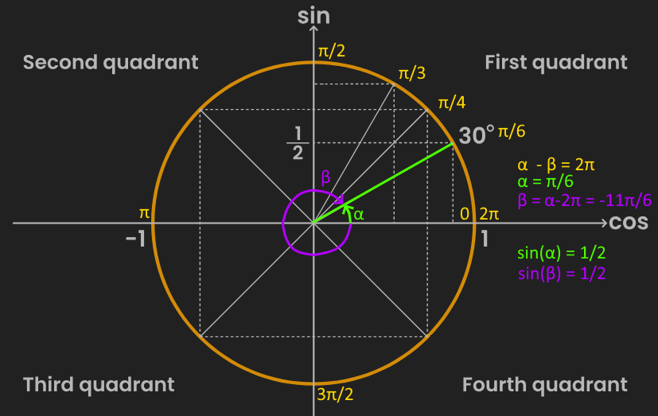
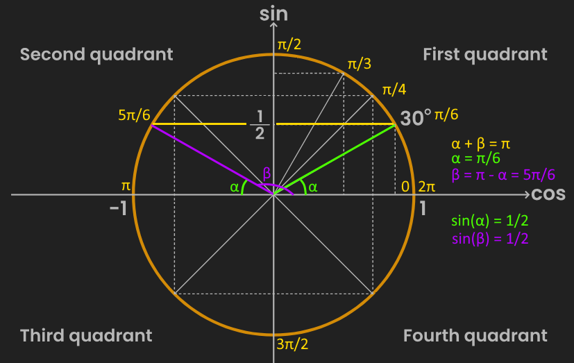

Determine the domain of the function by noting whether there are any points or ranges where the function is undefined. This often happens when a value of $x$ would lead to a denominator equal to $0$, or a negative input inside a pure square root or logarithm, for example.
Check for the axes intercepts. For the y-axis, this is simply done by evaluating $f(0)$. For the x-axis, it's achieved by solving $f(x)=0$. Note that a function might not have intercepts. In the case of the y-axis, this happens if $0$ is not part of the domain of $f(x)$. In the case of the x-axis, it happens when $f(x)=0$ has no real solutions.
Calculate the limits at the boundaries of the function. For example, if the domain of $f(x)$ is $x \in (-\infty,1) \cup (2,3) \cup (5,+\infty)$, then the following limits should be computed (being careful to approach either to the left or to the right in each case for $2$, $3$ and $5$):
$$\lim_{x \to -\infty} f(x) \quad \lim_{x \to 1^-} f(x) \quad \lim_{x \to 2^+} f(x) \quad \lim_{x \to 3^-} f(x) \quad \lim_{x \to 5^+} f(x) \quad \lim_{x \to +\infty} f(x) \quad$$
These limits also reveal whether there are any vertical or horizontal asymptotes:
Given $x^*$ a finite boundary of $f(x)$, a vertical asymptote is present at $x_a=x^*$ when $\lim_{x \to x*}f(x) = \pm \infty$
A horizontal asymptote is present at $y_a$ when $\lim_{x \to \infty} = y_a \not= \infty$
Compute the first derivative $f'(x)$. Then, the values of $x$ at which $f'(x)=0$, here called $x'_0$, will correspond to the location of maximum/minimum points. Evaluating the sign of $f'(x)$ before and after these $x'_0$ values also helps, in order to know the increasing-decreasing intervals.
Compute the second derivative $f''(x)$. Then, the values of $x$ at which $f''(x)=0$, here called $x''_0$, can point to locations where a change of concavity occurs. The concave-convex intervals can be determined by evaluating the sign of $f''(x)$ before and after these $x''_0$ values. The second derivate is also useful to know whether the $x'_0$ points correspond to local maxima or minima, by evaluating $f''(x'_0)$:
$$f''(x'_0) < 0 \Rightarrow max \\ f''(x'_0) > 0 \Rightarrow min \\$$
$$\begin{aligned}
x_a &\in \{-\frac{3}{4}\} \text{ as found in "Limits at Boundaries"} \\
&& \\
y_a &\in \{\} \text{ as found in "Limits at Boundaries"} \\
\end{aligned}$$
Verbose explanation of $f(x) = 2sin^2(x)-sin(x)-1$
Background
Keep in mind the properties of $sin(x)$, either by observing its behavior in the unit circle or its plot (both available here). Remember that the circle can be traversed counterclockwise for positive angles or clockwise for negative angles, but the corresponding $sin(\theta)$ value will be the same.

It's important to remember that the inverse function of $sin()$ is $arcsin()$. This means that if $y = sin(x)$, then $x = arcsin(y)$. In simple words, an expression such as $\theta = arcsin(v)$ represents the question "what angle $\theta$ would produce the value $v$ when applying $sin()$ to $\theta$?".
Now recall that $sin(\theta)$ has a periodicity of $2n\pi$, where $n$ is an integer (i.e. $n \in \mathbb{Z}$). In other words, $sin(\theta) = sin(\theta-2n\pi)$. This means that if the whole domain of $\theta \in \mathbb{R}$ is considered, then the same value of $v = sin(\theta)$ can be obtained with $v = sin(\theta+2n\pi)$ with infinitely many possible values for $n$. If $arcsin()$ is now applied taking into account this periodicity, then $arcsin(v) = arcsin(sin(\theta - 2n\pi))$ or simply $arcsin(v) = \theta - 2n\pi$, which can also be rewritten as $\theta = arcsin(v) + 2n\pi$.
The unit circle shows that there is always a pair of angles $\alpha, \beta$ such that $sin(\alpha) = sin(\beta)$. This angles are related by $\alpha + \beta = \pi$. Indeed, note that the only cases when $\alpha = \beta$ is for $sin(\frac{\pi}{2}) = 1$ and $sin(\frac{-\pi}{2}) = -1$. Therefore, it will be often the case that solving $arcsin(x)$ will yield a set of two different solutions: $\theta \in \{\alpha, \beta\}$, or as often presented in this exercise: $\theta \in \{\alpha, \pi - \alpha\}$, where $\alpha = arcsin(x)$.

Domain
$f(x)$ is a polynomial of $sin(x)$, which is defined for all real numbers. Therefore, the domain of $f(x)$ is $\mathbb{R}$.
Asymptotes
Vertical asymptotes: There are no points $x_a$ (i.e. $x$ position where a vertical asymptote occurs) because there are no values of $x^*$ (i.e. $x$ values where the function is undefined i.e. outside the domain of $f(x)$) for this function. So there are no vertical asymptotes for $f(x)$
Horizontal asymptotes: There are no horizontal asymptotes $y_a$ (i.e. $y$ position where a horizontal asymptote occurs) because the limits at boundaries don't converge to any non-infinite number. Note that this is not related to the fact that the codomain of $f(x)$ is bounded between two finite numbers: the oscillatory nature of $sin(x)$ means that $f(x)$ doesn't converge to a concrete value at $lim_{x \to \infty} f(x)$.
Limits at Boundaries
See explanation above regarding the abscence of horizontal asymptotes for $f(x)$.
Axes Intercepts
X-axis: Solve $f(x)=0$.
In this case, consider $g(x)=sin(x)$. Then $f(g(x))$ is a simple a quadratic expression: $f(g) = 2g^2-g-1$. It can be factorized into $2g^2-g-1 = (2g+1)(g-1)$. It means that $f(g) = 0$ has two solutions when $g=g_0$, namely $g_0 \in \{-\frac{1}{2}, 1\}$.
Going back to finding $x_0$, recall that $sin(x - 2n\pi) = g(x)$ (with $2n\pi$ that accounts for periodicity). Now, $arcsin$ can be applied to both sides, $arcsin(sin(x - 2n\pi)) = arcsin(g(x))$, which simplifies to $arcsin(g(x)) = x - 2n\pi$ by definition. These means that the points where $f(x)$ intercept the x-axis, namely $x_0$ where $f(x_0) = 0$, can be found by computing $x_0 = arcsin(g_0) + 2n\pi$.
Now the unit circle can be used to infer the behavior of $arcsin()$ with respect to $g_0 \in \{-\frac{1}{2}, 1\}$. The unit circle is useful to recall that the same angle can be represented either positively or negatively, e.g. $\frac{3\pi}{2}$ behaves the same as $\frac{-\pi}{2}$
$g_0 = -\frac{1}{2}$: $sin(\theta)$ can yield $-\frac{1}{2}$ either when $\theta = -\frac{\pi}{6}$ (i.e. $-30$ or $330$ degrees) or when $\theta = \pi + \frac{\pi}{6}$ (i.e. $180 + 30 = 210$ degrees). Therefore, given $g_0 = -\frac{1}{2}$, $arcsin(g_0) + 2n\pi$ evaluates to either $-\frac{\pi}{6} + 2n\pi$ or $\pi + \frac{\pi}{6} + 2n\pi$. Hence $x_0 \in \{(2n-\frac{1}{6})\pi, (2n+\frac{7}{6})\pi\}$ are two x-axis intercepts.
$g_0 = 1$: $sin(\theta)$ yields $1$ only when $\theta = \frac{\pi}{2}$ (i.e. $90$ degrees). Note that the solution to the exercise above follows the idea of an angle pair $\alpha, \beta$ for every arcsine computed, but in this case $\alpha = \beta$. So, given $g_0 = 1$, $arcsin(g_0) + 2n\pi$ evaluates to $\frac{\pi}{2} + 2n\pi$. Hence $x_0 \in \{(2n-\frac{3}{6})\pi\}$ is another x-axis intercept.
The final result can be collected into a single expression: $x_0 \in \{(2n-\frac{1}{6})\pi, (2n+\frac{3}{6})\pi, (2n+\frac{7}{6})\pi\}$.
Y-axis: Evaluate $f(0)$. In this case, $f(0) = 2sin^2(0)-sin(0)-1 = 2(0)-(0)-1 = -1$.
Increasing-Decreasing Intervals
Solving the derivative
Compute the first derivative as usual:
$$\begin{aligned}
f'(x) &= 2(2sin(x))cos(x) - cos(x) \\
&= (4sin(x) - 1) cos(x) = 0 \\
\end{aligned}$$
In its factorized form, $(4sin(x) - 1) cos(x) = 0$ can be satisfied either by $(4sin(x) - 1) = 0$ or $cos(x) = 0$. This will yield the x-coordinates $x'_0$ where a local minimum or maximum is present.
$4sin(x) - 1 = 0$: This can be rearrenged into $sin(x) = \frac{1}{4}$. As mentioned before, this means that there could be two solutions $sin(x'_0) = \frac{1}{4} \Rightarrow x'_0 \in \{2n\pi+\theta, 2n\pi+\pi-\theta\}$, with $\theta=arcsin(\frac{1}{4}) \approx 0.25 \approx \frac{\pi}{12}$. From here, one obtains the approximate solutions $x'_0 \in \{\pi(2n + \frac{1}{12}), \pi(2n + \frac{11}{12})\}$.
$cos(x) = 0$: In this case, because cosine is symmetric (i.e. $cos(x) = cos(-x)$), the pair of solutions follow the schema $\{2n\pi+\theta, 2n\pi-\theta\}$ instead. Furthermore, the unit circle shows that $arccos(0) = \frac{\pi}{2}$. Therefore, the solutions for this factor correspond to $x'_0 \in \{\pi(2n + \frac{1}{2}), \pi(2n - \frac{1}{2})\}$, which can be also represented as $x'_0 \in \{\pi(2n + \frac{6}{12}), \pi(2n + \frac{18}{12})\}$ ("$18$" because $\frac{18}{12}=\frac{3}{2}$ and $cos(\frac{3}{2}) = cos(-\frac{1}{2})$).
The final result can be collected into a single expression: $x'_0 \in \{\pi(2n + \frac{1}{12}), \pi(2n + \frac{6}{12}), \pi(2n + \frac{11}{12}), \pi(2n + \frac{18}{12})\}$.
Getting the intervals
As always, the increasing-decreasing intervals can be found by evaluating the sign of $f'(x)$ at any position $x$ between two local minima/maxima. In this case, $n$ can be set to $n=0$ for simplicity of the numerical evaluations. Note that the last range to be evaluated is between the last $x'_0$ value, $\frac{18 \pi}{12}$, and the first one, $\frac{1 \pi}{12}$, because the function is periodic and repeats after $\frac{24 \pi}{12}$. an extra $+2$ is added to the expression to account for this.
$$\begin{aligned}
f'(x) > 0, && x &\in (\pi(2n + \frac{1}{12}), \pi(2n + \frac{6}{12})) && (+) \\
f'(x) < 0, && x &\in (\pi(2n + \frac{6}{12}), \pi(2n + \frac{11}{12})) && (-) \\
f'(x) > 0, && x &\in (\pi(2n + \frac{11}{12}), \pi(2n + \frac{18}{12})) && (+) \\
f'(x) < 0, && x &\in (\pi(2n + \frac{18}{12}), \pi(2n + 2 + \frac{1}{12})) && (-) \\
\end{aligned}$$
Concave-Convex Intervals
Solving the derivative
Now, the second derivative must be computed.
$$\begin{aligned}
f''(x) &= (4cos(x))(cos(x)) + (4sin(x) - 1)(-sin(x)) \\
&= 4(cos^2(x) - sin^2(x)) + sin(x) \\
&= 4(1 - sin^2(x) - sin^2(x)) + sin(x) \\
&= -8sin^2(x) + sin(x) + 4 = 0 \Rightarrow \text{ use quadratic formula} \\
\end{aligned}$$
This quadratic expression isn't suitable for factorizing, so the quadratic formula should be used instead. Consider a variable $g=sin(x)$ and apply thr formula to $-8g^2 + g + 4$. According to it, $-8g^2 + g + 4 = 0$ is satisfied when $g \in \{\frac{1-\sqrt{129}}{16}, \frac{1+\sqrt{129}}{16}\}$. This can be used to found the values for $x''_0$ (i.e. values of $x$ that satisfy $f''(x)=0$).
$sin(x) = \frac{1-\sqrt{129}}{16}$: The two plausible solutions are given by $x''_0 \in \{2n\pi+\theta, 2n\pi+\pi-\theta\}$. Here, $\theta=arcsin(\frac{1-\sqrt{129}}{16}) \approx -0.70 \approx -\frac{8\pi}{36}$. Hence, the approximate solutions are given by $x''_0 \in \{2n\pi-\frac{8\pi}{36}, 2n\pi+\pi+\frac{8\pi}{36}\}$. These can also be represented as $x''_0 \in \{\pi(2n-\frac{8}{36}), \pi(2n+\frac{44}{36})\}$ ("$44$" because $36-(-8)=44$).
$sin(x) = \frac{1+\sqrt{129}}{16}$: The two plausible solutions are given by $x''_0 \in \{2n\pi+\theta, 2n\pi+\pi-\theta\}$. Here, $\theta=arcsin(\frac{1+\sqrt{129}}{16}) \approx 0.88 \approx \frac{10\pi}{36}$. Hence, the approximate solutions are given by $x''_0 \in \{2n\pi+\frac{10\pi}{36}, 2n\pi+\pi-\frac{10\pi}{36}\}$. These can also be represented as $x''_0 \in \{\pi(2n+\frac{10}{36}), \pi(2n+\frac{26}{36})\}$ ("$26$" because $36-(10)=26$).
The final result can be collected into a single expression: $x''_0 \in \{\pi(2n-\frac{8}{36}), \pi(2n+\frac{10}{36}), \pi(2n+\frac{26}{36}), \pi(2n+\frac{44}{36})\}$.
Getting the intervals
Similar to the increasing-decreasing intervals, the concave-convex intervals are found by observing the sign of $f''(x)$ at any position $x$ between a pair of consecutive $x''_0$ values. The same considerations about periodicity as taken as before.
$$\begin{aligned}
f''(x) > 0, && x &\in (\pi(2n-\frac{8}{36}), \pi(2n+\frac{10}{36})) && (\cup) \\
f''(x) < 0, && x &\in (\pi(2n+\frac{10}{36}), \pi(2n+\frac{26}{36})) && (\cap) \\
f''(x) > 0, && x &\in (\pi(2n+\frac{26}{36}), \pi(2n+\frac{44}{36})) && (\cup) \\
f''(x) < 0, && x &\in (\pi(2n+\frac{44}{36}), \pi(2n + 2 -\frac{8}{36})) && (\cap) \\
\end{aligned}$$
Maximum-Minimum Points
The x-coordinates at which maximum-minimum points are present were previously found by studying the first derivative (i.e. they correspond to $x'_0$ that satisfy $f'(x'_0) = 0$). To know whether they are minima or maxima, the $x'_0$ values should be plugged into $f''(x)$. The output's sign will determine if they correspond to maxima or minima. Again, consider $n=0$ for simplicity.
$$\begin{aligned}
f''(\frac{\pi}{12}) &> 0 \Rightarrow min \\
f''(\frac{6\pi}{12}) &< 0 \Rightarrow max \\
f''(\frac{11\pi}{12}) &> 0 \Rightarrow min \\
f''(\frac{18\pi}{12}) &< 0 \Rightarrow max \\
\end{aligned}$$
Inflection Points
The inflection points are in the values of $x$ where $f''(x)=0$. That is, they're the values $x''_0$ that were found previously.
$$\begin{aligned}
x''_0 &\approx \pi(2n-\frac{8}{36}) \\
x''_0 &\approx \pi(2n+\frac{10}{36}) \\
x''_0 &\approx \pi(2n+\frac{26}{36}) \\
x''_0 &\approx \pi(2n+\frac{44}{36}) \\
\end{aligned}$$
Plot
All the information gathered before can be used to sketch the plot. This is where it turns useful to have grouped the relevant x-coordinates under a common denominator (e.g. $x_0 \in \{(2n-\frac{1}{6})\pi, (2n+\frac{3}{6})\pi, (2n+\frac{7}{6})\pi\}$); it makes it easier to place the points in their correct locations.
Problems
Exercise 2
A person's blood glucose level after a meal varies according to the function (...) and $A > 0$ is constant.
$$ g(t) = A(1 + e^{-3t} - e^{-5t}) $$
What is the initial blood glucose level?
$$ g(0) = A(1 + e^0 - e^0) = A $$
What is the limit of the blood glucose as $t \to \infty$?
Two bacterial colonies grow in the same Petri dish and share the same food supply. The first colony grows according to the law (...) The second colony grows according to the law (...) The initial number of bacteria in each colony is 6 (in units of thousands of cells). Time is measured in days. At time $t = 4$ days, the food supply is removed, and the colonies begin to die.
During the phase when food is present, determine the maximum and minimum values of each population. At what times are these values reached?
$$\begin{aligned}
b_1'(t) &= -3t^2 + 10t - 3 = 0 \\
&= (3t-1)(t-3) = 0 \\
t'_0 &\in \{\frac{1}{3}, 3 \} \\
&& \\
b_1''(t) &= -6t + 10 \\
b_1''(\frac{1}{3}) &= 8 > 0 \Rightarrow \text{min} \\
b_1''(3) &= -8 < 0 \Rightarrow \text{max} \\
&& \\
b_1(\frac{1}{3}) &= -(\frac{1}{3})^3 + 5(\frac{1}{3})^2 - 3(\frac{1}{3}) + 6 \\
&=-\frac{1}{27}+\frac{5}{9}+5 = \frac{149}{27} \approx 5.52 \\
b_1(3) &= -(3)^3 + 5(3)^2 - 3(3) + 6 \\
&= -27 + 45 - 9 + 6 = 15 \\
&& \\
b_2'(t) &= 3 \neq 0 \therefore \text{ no min/max under this criterion } \\
\end{aligned}$$
In other words, $b_1$ reaches a minimum at $t = \frac{1}{3}$ with a population of $\frac{149}{27} \approx 5.52$. It then reaches a maximum at $t = 3$ with a population of $15$. On the other hand, $b_2$ grows linearly, so it doesn't have a point where the derivative changes sign and therefore has neither minima nor maxima using this criterion. However, taking into acount this constant linear growth and that the domain is $t \in [0,4]$, it can be easily seen that the values $b_2(0) = 6$ and $b_2(4) = 18$ correspond to the actual minimum and maximum respectively for this function.